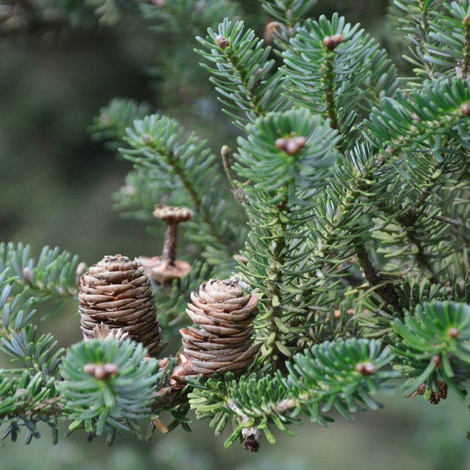

Plantacja świerków "Choinki"
Jodła kaukaska

Jodła kaukaska, jodła Nordmanna – gatunek drzew należący do rodziny sosnowatych. Występuje w Zachodniej Azji, w górach Kaukazu – w Turcji, Gruzji, Rosji i Azerbejdżanu. Tempo wzrostu jodły kaukaskiej jest dość wolne, jej wysokość po 10 latach wynosi około 3 m
Tempo wzrostu jodły kaukaskiej jest dość wolne, jej wysokość po 10 latach wynosi około 3 m. Ze względu na swój symetryczny pokrój jest jednym z najpopularniejszych drzewek bożonarodzeniowych.
W ofercie mamy choinki o wysoksci:
od 40cm do 200cm i cenie w